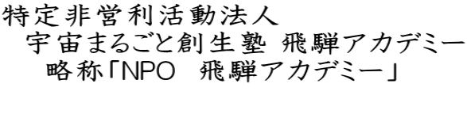

お出でいただき ありがとうございます
世界最先端の宇宙物理学を体験しよう！
夢のたまご塾のお休みが2年続いてしまいました。
とても残念であり、皆様には申し訳ありません。
当塾が大切にしていた一つである、”講師の先生方と寝食を共にし学ぶ”事が出来ず中止としました。今は色々な手段で受講生とつながる方法を模索しております。
近い将来、中高生のみんなと会えるのを楽しみにしております。
世界でも最先端の宇宙物理学のメッカ 飛騨市神岡町。
物理学以外でも、様々な研究施設が点在しています。
文部科学省指定のスーパーサイエンスハイスクール（ＳＳＨ）の飛騨市内での見学等のサポートをしています。
地底から宇宙の神秘を探る！！
ＧＳＡ
ジオ・スペース・アドベンチャーとは。。。
岐阜県飛騨市神岡町にある神岡鉱業（株）の茂住坑内で
行われる、科学と冒険のイベントです。
＊年に1度の開催です＊
岐阜県飛騨市から世界へ発信
あなたの中にねむっている 夢のたまご。
それはまだ、
ほんの好奇心ていどのものかもしれません。
「夢のたまご塾」飛騨アカデミーが用意するものは、
きっかけです。
あなただけの《夢のたまご》を見つけてください。
「夢のたまご塾」飛騨アカデミー（ゆめたま）、
ジオ・スペース・アドベンチャー（ＧＳＡ)、
スーパーサイエンスハイスクール（ＳＳＨ）招致・支援活動、
宇宙まるかじり講座、
をより効果的に運営するために2007年12月に統合され、
宇宙まるごと創生塾 飛騨アカデミー が誕生しました。
2019年3月より、ひだ宇宙科学館カミオカラボの
指定管理を始めました。
|  |
 |
任意団体「宇宙まるごと創生塾 飛騨アカデミー」は
2018年10月23日に 特定非営利活動法人宇宙まるごと創生塾飛騨アカデミーになりました。 |
|
当ホームページの文章及び画像の引用・転載は厳禁です。
Copyright(c) 2004-2021 HIDA-ACADEMY All Rights Reserved. |